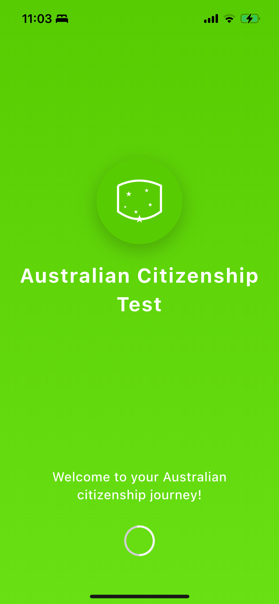
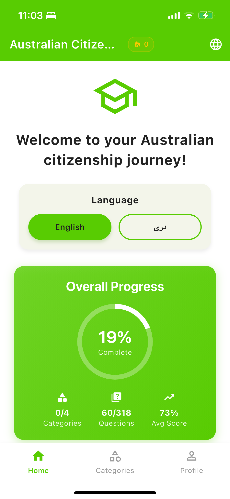
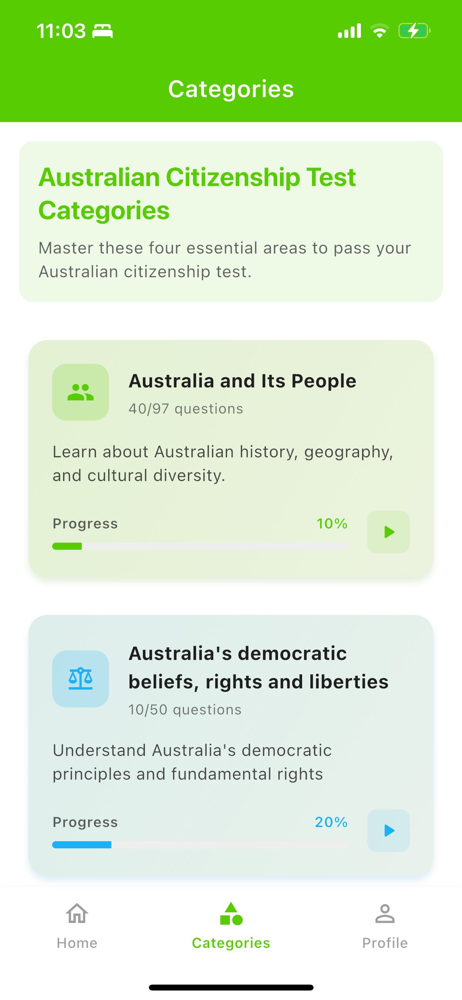
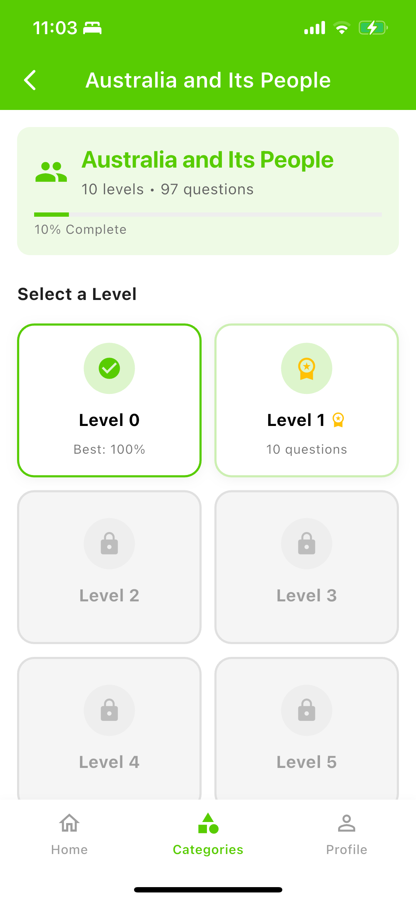
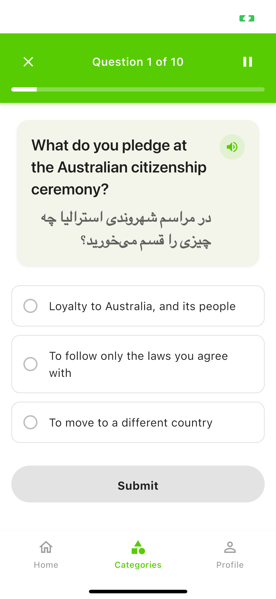
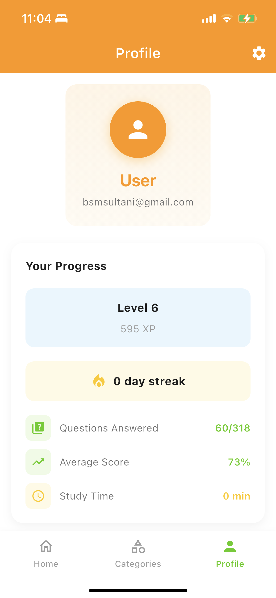

A Flutter Mobile Application
I built the Australian Citizenship Test app to help people preparing for their Australian citizenship test. The app provides a comprehensive study tool with over 318 practice questions covering all the essential areas required to pass the official citizenship test.
What makes this app special is its bilingual support. Having gone through the immigration process myself, I understand how challenging it can be to study for such an important test in a second language. That's why I added Dari (Persian) language support alongside English, making the content accessible to the Afghan community in Australia.






As someone who has personally experienced the citizenship journey, I wanted to create a tool that would genuinely help others in the same situation. Many existing apps either lacked proper translations or didn't cater to non-English speakers effectively. This app bridges that gap by providing quality bilingual content with a focus on user experience and effective learning.
The app is built using Flutter, Google's cross-platform framework, allowing for a single codebase that runs on both iOS and Android devices. Key technical aspects include: